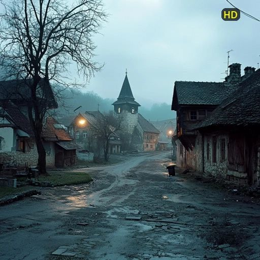
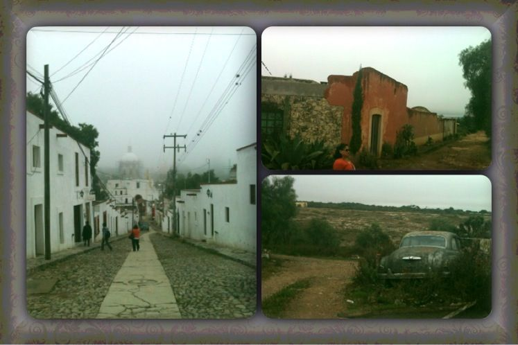
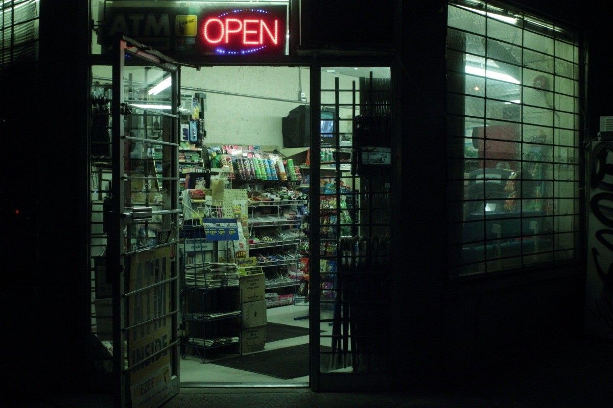
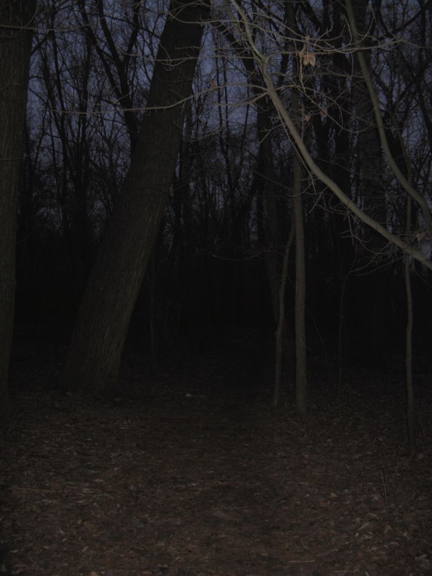
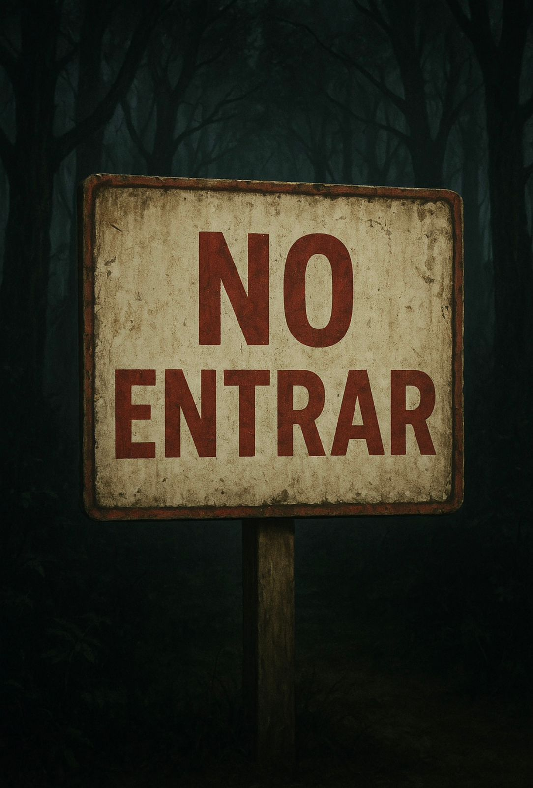

Yo y mis amigos siempre fuimos fanáticos de visitar lugares abandonados o bosques sombrios, nos encanta la idea de investigar y saber las historias de cada lugar, un dia salimos como de costumbre a caminar, eramos yo, Noah, Abril, Sol y Mateo, era un pequeño pueblo el cual habitaba poca gente pero muchas leyendas.
  Cuando ibamos de camino a un almacén a comprar algo para comer, ibamos hablando sobre visitar el bosque que se encontraba a unos kilómetros del pueblo, un señor de unos 70 años que atendia el almacén dijo que no fuéramos tan tarde a ese bosque ya que allí era común escuchar en las noticias gente que entraba y nunca más salía, lo raro es que la policía no encontraba rastros de los cuerpos, era como si desaparecieran o se desvanecieran de la nada.  Cuando salimos de allí todos quedamos intrigados por lo que nos había contado ese señor, era todo tan raro, pero como queríamos sacarnos las dudas decidimos ir así que cuando se hizo de noche alquilamos una pequeña habitación para 5 personas y nos preparamos para ir a ese bosque, íbamos en el auto de Noah así que llegaríamos más rápido. Cuando llegamos pudimos notar un cartel que decia "No entrar"   Entrar al bosque Irnos de ahí